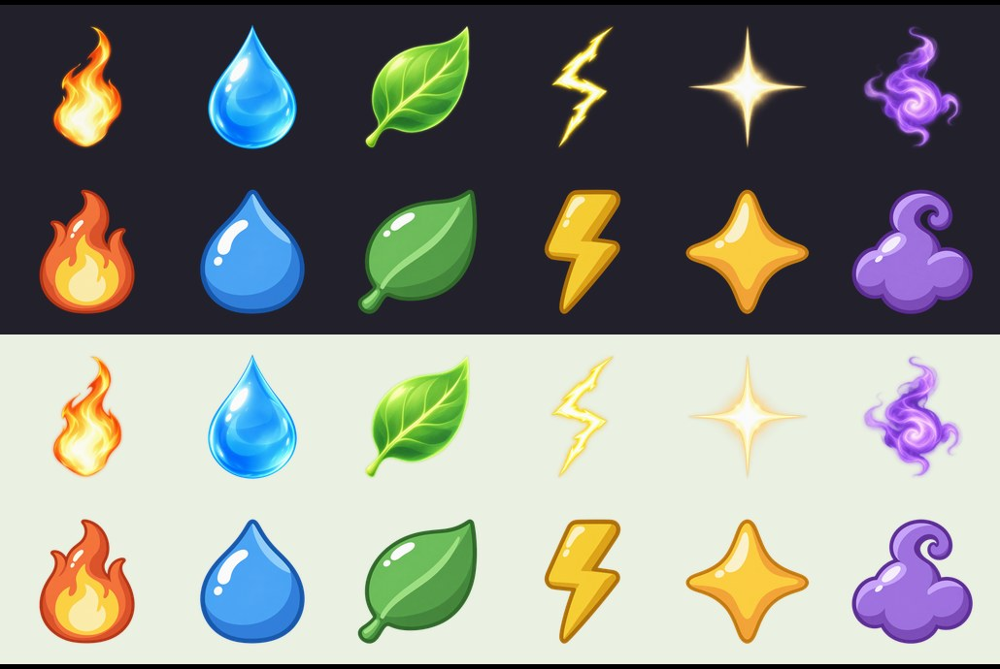
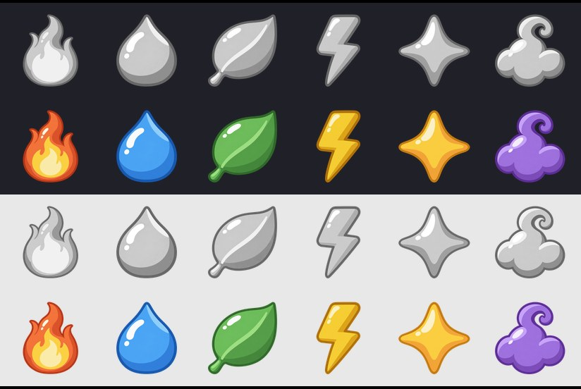
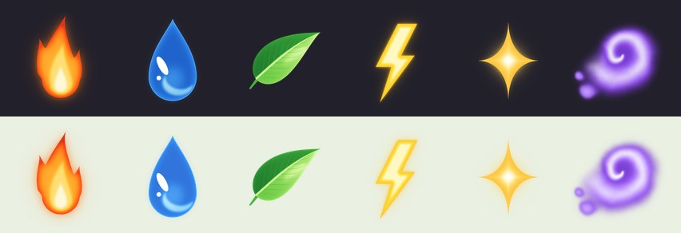
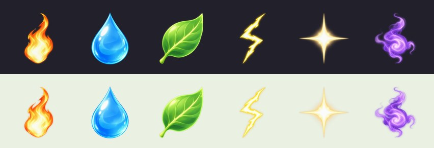
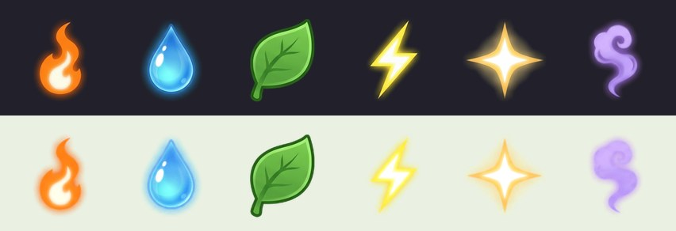
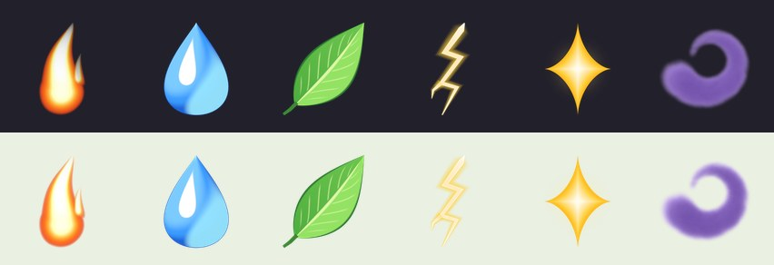
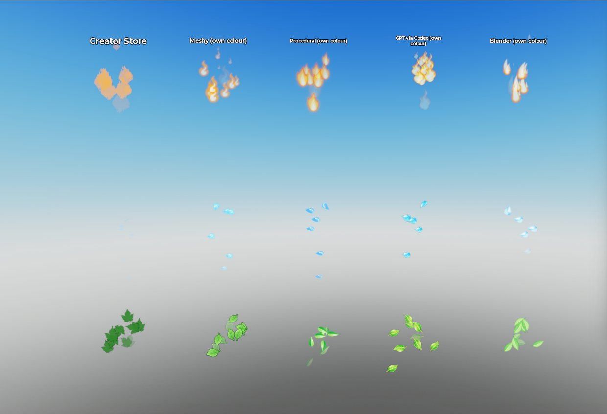
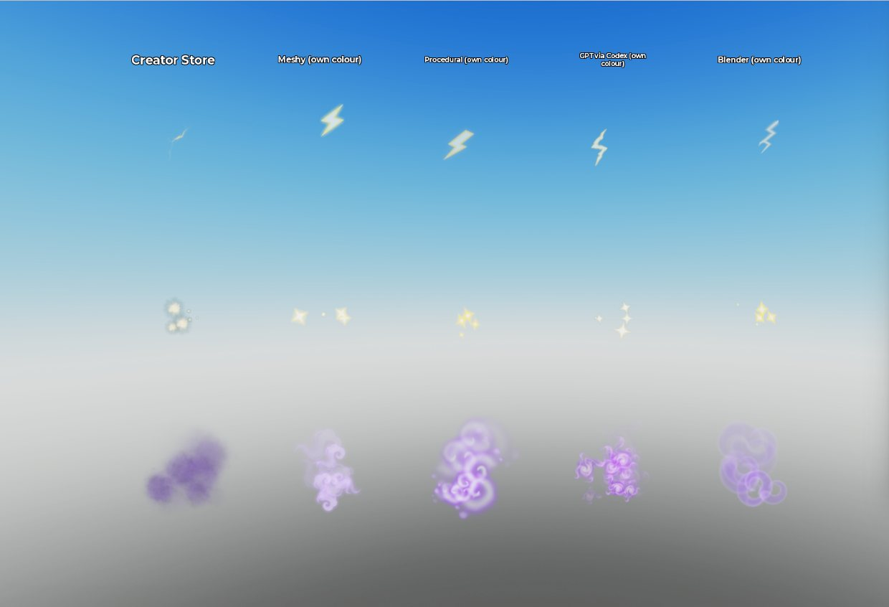
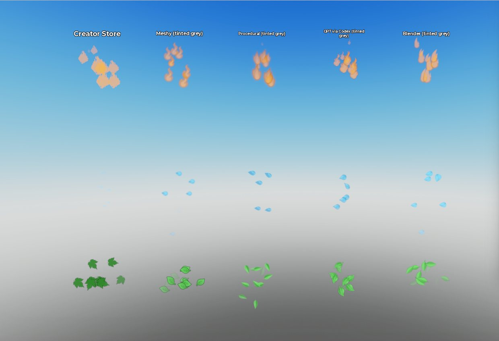
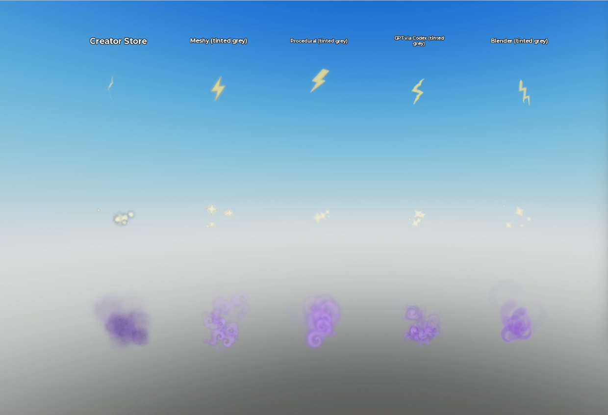

Particle Sprite Bake-off
The same six particle sprites (flame, droplet, leaf, bolt, star, wisp) made six ways, then run on identical ParticleEmitters in the Monster Ranch place to decide how the game's effects get made.
Decided 26 Sep: Codex, with the cartoon brief. Round 2 (below) gave Codex a precise brief: toy-style cartoon, three flat tones, a same-hue outline, no glow, and the game's own monster as a style reference. In the Studio head-to-head it beat code-drawn sprites on every sprite. Following your rule ("Codex if it wins, otherwise procedural"), the full set is now being made with Codex.
Round 2: Codex with a cartoon brief
Same six sprites and one Codex session, with the Kindlefox concept attached as a style reference. The brief set the exact shape, orientation and hex colours for each sprite. 16 minutes in all, including one fix to the leaf; no extra cost on the subscription. gpt-6-luna was refused again for the ChatGPT login, so it ran on gpt-6-astra.


- In the engine, head to head against procedural and Meshy: Codex's bolt is the only one that stays yellow against the sky. Its stars and outlined puffs are the most legible at game size, and its leaves read best of any method.
- Tinting still muddies any sprite. Production uses a sprite drawn in each element's own colour. Grey tintable sprites are kept for neutral shapes: glow, ring, swirl, puff and rune.
Round 1 recommendation (superseded): draw sprites in code (procedural) as the main pipeline, with GPT via Codex as the fallback for the few illustrative shapes code draws poorly. Procedural costs nothing, regenerates the whole set in about 30 seconds, stays in one style, and held up as well as any method in the engine. Its flame and wisp read best.
The bigger lesson came from the emitters, not the sprites. At game scale the top four methods look closer than their sprite sheets suggest. Emitter settings made more difference: at the usual glow levels, every method's fire, bolts and stars washed out to white against the sunny ranch sky.
Scorecard
| Method | Verdict | Cost | Wall time | Machine time | In the engine | Adding a new sprite |
|---|---|---|---|---|---|---|
| Procedural Python + numpy | Use | 0 | 10 min | 31 s / set | Most vivid flame, strongest wisp, clean droplet and star. The leaf is thin at game size. | A new function in procedural.py. Easy for geometric shapes (ring, rune, heart, coin, snowflake), slower for organic ones. |
| GPT via Codex gpt-6-astra, image tool | Fallback | $0 extra* | 23 min | ~75 s / sprite | The most detailed art, with true transparent PNGs. Droplet, leaf and star are excellent. The flame reads pale and the wisp is busy. | One Codex run per sprite. Style drift between batches is untested; add a style-reference image. |
| Meshy Nano Banana Pro sheet | Good, costs credits | 21 cr | 7 min | 59 s | A cohesive cartoon set. Its outlined leaf and bolt read best against the bright sky. The wisp is pale. | Re-rolls came back on white instead of black (alpha keying breaks). Credits are earmarked for monsters. |
| Blender Cycles, headless | Skip | 0 | 22 min | 172 s / set | Nice droplet and leaf. The bolt is weak and the wisp reads as rings. | Model, light and render each sprite. The wisp volume alone took 114 s. The most work for no gain. |
| Creator Store free decals | Skip | 0 | 12 min | — | The maple leaf reads well; the rest is a mix of realistic fire and smoke next to clip art. | A new hunt each time, through noisy search, moderated thumbnails and a few rips. |
| Roblox built-in | Baseline | 0 | — | — | Only fire, smoke and a sparkle exist. | Not possible. |
* On your ChatGPT subscription. Codex refused gpt-6-luna for a ChatGPT-account login (HTTP 400), so it ran on your config default gpt-6-astra at high effort; the image tool is the same either way. The OpenAI API route is closed: that key has no credits (HTTP 429, nothing billed).
The sprites
Own-colour versions on the dark and the light ground. Every method also delivered a white/grey version for tinting per element.
Procedural
SDF shapes, FFT glow, home-made noise; deterministic.

GPT via Codex
One image per sprite, transparent PNG.

Meshy
One 3×2 sheet on black, cut by brightness.

Blender
Emission shaders, volumes for flame and wisp.

Creator Store
Best free pick per sprite (store thumbnails).

In Roblox Studio
Same emitter per sprite, three times game size so they can be judged, over the place's own sky. Columns left to right: Creator Store, Meshy, Procedural, GPT via Codex, Blender.




What the engine test taught
- Glow is the enemy in daylight. LightEmission 0.8–1 added to a bright sky turned every method's flames, bolts and stars nearly white. Daytime presets use 0.15–0.3; glow belongs to night and to dark spots like portal cores.
- Fire needs its own-colour sprite. A white flame tinted orange goes pastel. Droplets, leaves, bolts, stars and wisps tint well, so one sprite serves several elements.
- Anything seen against the sky needs a darker edge. That's why Meshy's outlined bolt and leaf read best. The procedural generator gets an outline option instead of switching methods.
- Particles only simulate near the live camera. The gallery had to move Studio's own camera before capturing, which also means off-screen auras cost almost nothing.
In progress
- The full set of 22 sprites through Codex in the round-2 style, anchored on the six approved sprites: ember, bubble, petal, pebble, void swirl, 5-point star, heart, coin, snowflake, rainbow twinkle, confetti, ring, puff, portal swirl, rune, plus a glow orb drawn in code.
Config/Vfx.luau(sprite ids and presets as data) andVisuals/Vfx.luau(builds emitters, low-graphics budget).- Monsters: element auras, all 14 mutations, shiny and rainbow effects, hooked into
MonsterModel.Build, which every monster already passes through (mesh or placeholder, pens, mounts, viewports). Mesh monsters currently have no effects at all. - Landmarks: Raid Portal and Trading Hub vortexes, the Sky Gate, Star Altar runes, and ambient effects on the other hub buildings.
- Moment bursts on the existing events: hatch, evolve, monster and ranch level-up, rebirth, plus the coin and heart bursts redone with the new sprites.